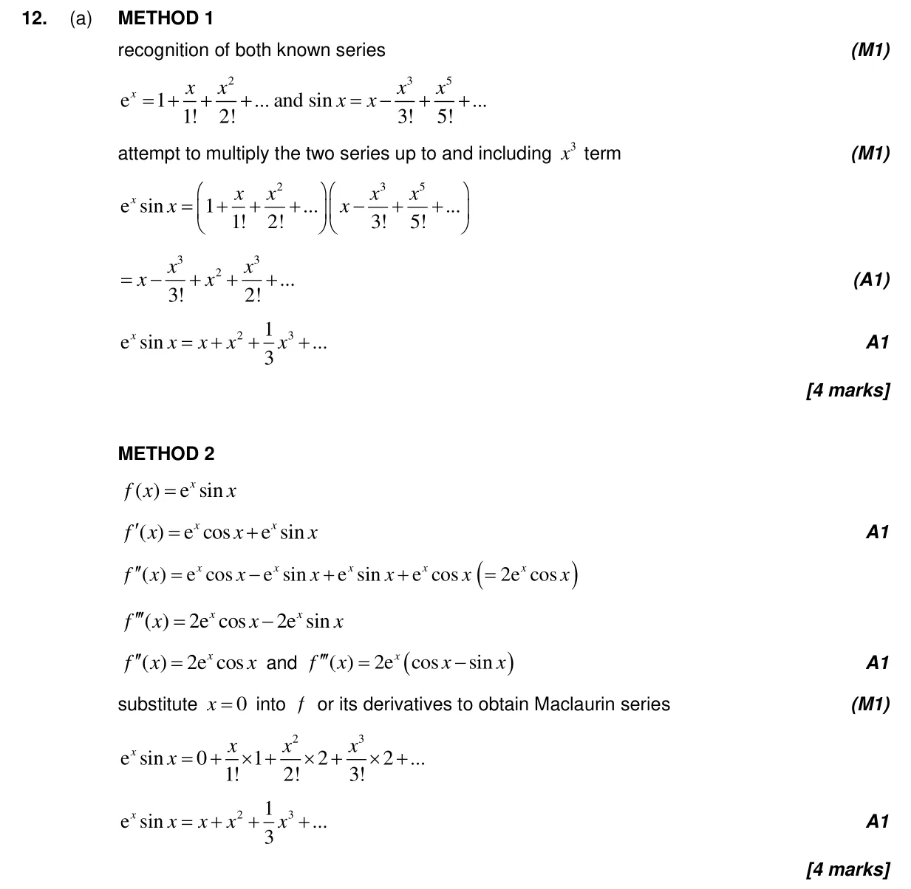
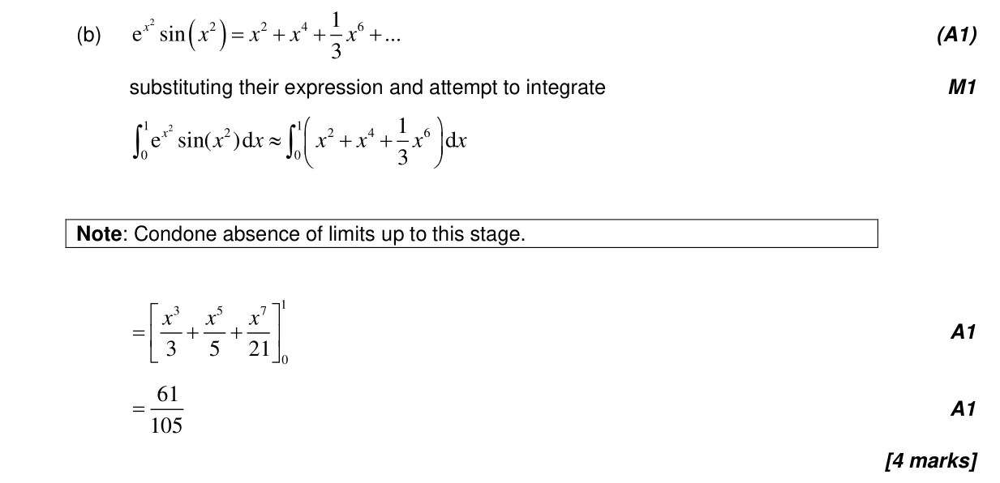
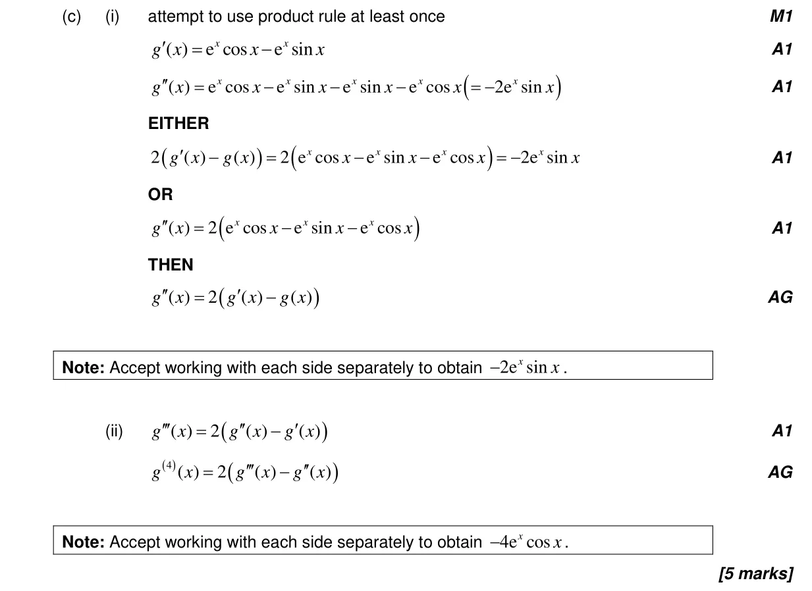
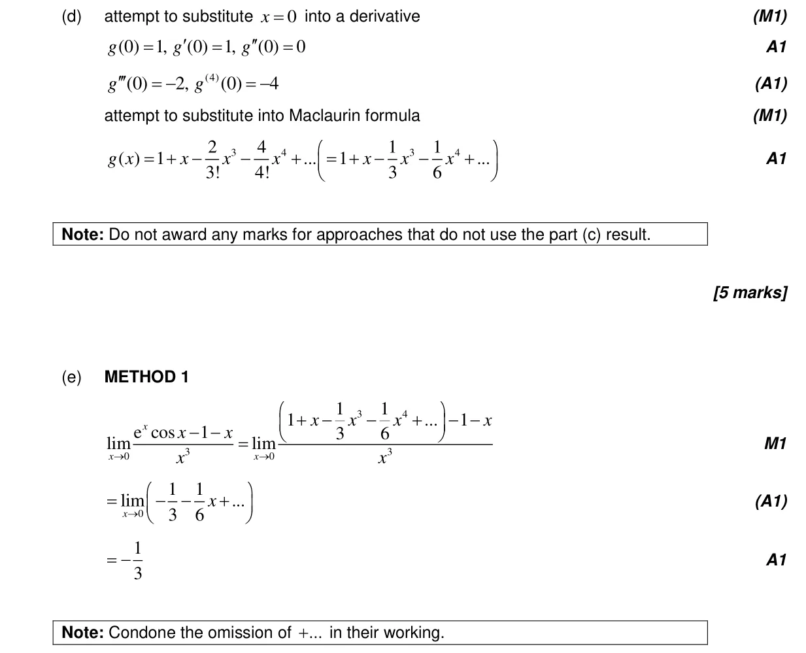
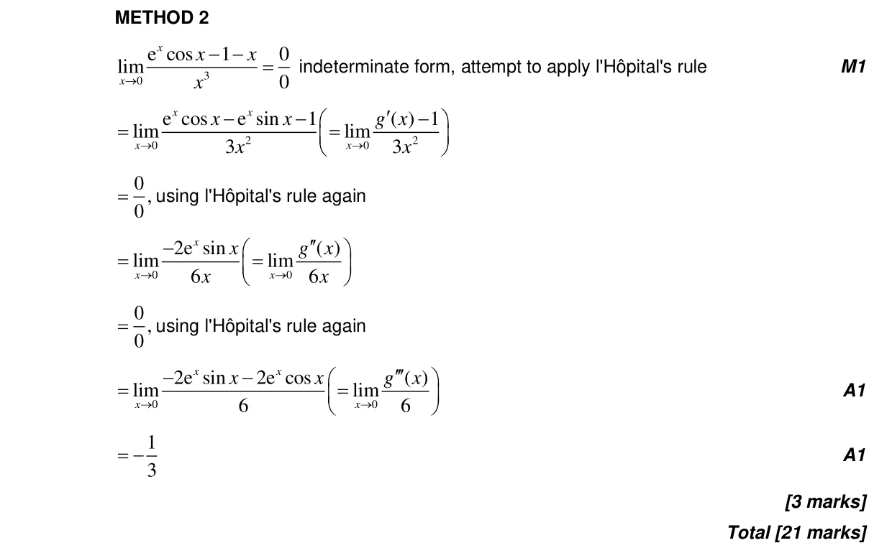

5.19 Maclaurin series5.13 Limits by l'Hôpital's rule or Maclaurin series5.6 Differentiating polynomials n in Q, chain, product and quotient rules5.12 Continuity, differentiability, limits and differentiation from first principles5.5 Integration introduction, areas between curve and x-axis
Question

Markscheme




